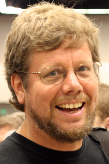
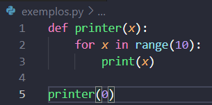
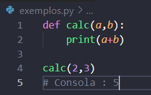
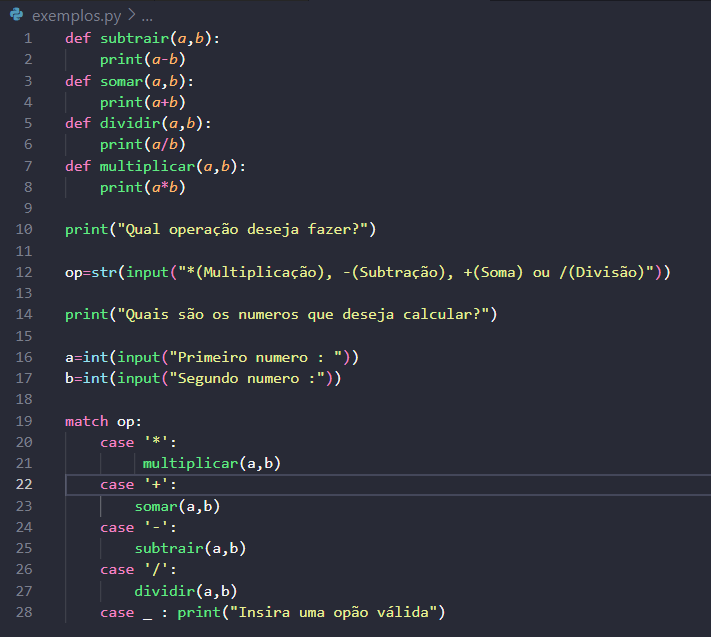

No Modulo de Python Básico estudamos várias coisas sobre python, desde os tipos de dados,loops,funções e inicios a programação orientada a objetos, entre outros.
Python é uma linguagem de programação cirada em 1991 por Guido van Rossum, python é uma linguagem de alto nível e de proposito geral, ou seja, pode ser usada para um bocadinho de tudo, desde fronted a scripts, sendo mais utlizada em scripts e IA.
Python assim como algumas outras linguagens possui uma filosifia essa sendo :
Alguns exemplos de coisas simples em Python :
Uma das coisas mais importantes na programação são os loops/ciclos, sendo o mais utiliado o for.
As contas também são frequentemente usadas, aqui está um exemplo de um soma básica.
Tudo é divertido quando se esta a aprender, então para por isso em prático deixo um desafio!
Tente criar uma calculadora!
Dica : tem que possuir 4 funções, uma para cada operação, Divisão,Multiplicacão,Soma e Subtração.
Agora que já tentaste desenvolver uma calcudara aqui vai o código final :
